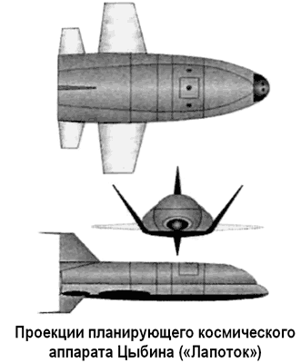

Планирующий космический аппарат Цыбина («Лапоток»)
В 1957 году авиаконструктор Павел Цыбин, возглавлявший ОКБ-256 Госкомитета авиационной техники при Совете Министров СССР, получил задание на разработку проекта воздушно-космического аппарата в противовес американской программе «Дайна-Сор». В то время Сергей Королев еще считал парашютную посадку бесперспективной, явно отдавая предпочтение схеме планирующего спуска, а потому, по его заказу, Цыбин инициировал проект планирующего космического аппарата «ПКА». Эскизный проект «ПКА» был подписан Цыбиным 17 мая 1959 года.
Согласно этому проекту пилотируемый «ПКА» выводился на орбиту высотой 300 километров ракетой-носителем «Восток». После орбитального полета в течение 24–27 часов «ПКА» должен был сойти с орбиты и возвратиться на Землю, планируя в плотных слоях атмосферы. В начале спуска, в зоне интенсивного теплового нагрева «ПКА» использовал подъемную силу несущего корпуса оригинальной формы (Сергей Королев дал ему название «Лапоток»), а потом, снизив скорость до 500–600 м/с, с высоты 20 километров планировал с помощью раскрывающихся крыльев, сложенных при старте почти вертикально.
Время спуска «ПКА» с орбиты искусственного спутника Земли могло составить до полутора часов. Посадку предполагалось выполнить на специально выполненную грунтовую площадку с использованием лыжного шасси «велосипедного» типа — сначала на заднюю лыжу, а потом на переднюю.
Фюзеляж «ПКА» имел стальную обшивку, прикрепленную сваркой к силовому набору. От нагрева фюзеляж был защищен металлическим донным экраном, установленным с зазором в 100 миллиметров. Носок фюзеляжа и передние кромки аэродинамических поверхностей, изготовленных из стали, предполагалось охлаждать; причем рассматривалась возможность применения для этого жидкого лития. Согласно расчетам максимальная температура передней части теплозащитного экрана и кромок рулей могла достичь 1200 °C в отличие от верхней части фюзеляжа, где ожидаемая температура не превышала бы 400 °C. Сложенные стальные консоли крыла, находящиеся в аэродинамической «тени» фюзеляжа, при планировании «ПКА» не должны были подвергаться большому нагреву.
Внутри фюзеляжа размещались герметизированные кабина космонавта и приборный отсек, выполненные из алюминиевого сплава и защищенные теплоизоляцией. Космонавт располагался перед приборной доской в катапультном кресле, имеющем три положения — стартовое, рабочее, для отдыха. Кабина имела систему жизнеобеспечения, два боковых иллюминатора и прибор для астроориентации.
В приборном отсеке и непосредственно в фюзеляже размещалось оборудование, необходимое для осуществления орбитального полета и спуска.
Для маневрирования на орбите «ПКА» имел навесную двигательную установку, примыкающую к донному щиту фюзеляжа и закрытую обтекателем. ДУ включала топливные баки, систему подачи топлива и два жидкостных ракетных двигателя — тормозной и корректирующий. ДУ отделялась от аппарата на высоте 90 километров после выдачи тормозного импульса для схода сорбиты.

Для ориентации «ПКА» на орбите и при входе в плотные слои атмосферы применялись реактивные сопла, работающие на продуктах разложения перекиси водорода.
В случае аварии ракеты-носителя на высотах до 10 километров космонавт мог катапультироваться из кабины «ПКА». На больших высотах производилось аварийное отделение аппарата от ракеты, раскрытие консолей крыла и спуск на Землю.
Сергей Королев старался быть в курсе всех работ, проводившихся по «Лапотку» в ОКБ-256. От его собственного бюро в этих работах участвовали проектанты по космическим аппаратам и ракетам-носителям. Кроме того, к проекту были подключены коллективы ЦАГИ и ВИАМ.
После начала работ по «ПКА» в ЦАГИ выяснилось, что проблемы, встающие перед создателями крылатых космических аппаратов, гораздо серьезнее, чем было принято до этого считать. В частности, после продувок в аэродинамических трубах стало ясно, что тепловые нагрузки на теплозащитный экран значительно превосходят расчетные и материал экрана надо будет менять, а узел шарнира поворота консолей крыла на самом напряженном участке спуска находится в «застойной» зоне с повышенным подводом тепла и практически полным отсутствием теплоотвода. Требовались более детальные проработки проекта с моделированием реальных условий полета на аппаратах-аналогах.
Ракетчики, узнав о результатах, заметно охладели к идее планирующих крылатых аппаратов. Для первого космического корабля Королев выбрал схему с баллистическим спускаемым аппаратом как более простую, надежную и требующую наименьших затрат при экспериментальной отработке. Кроме того, начатая в те годы кампания против военных самолетов в пользу баллистических ракет затронула многие авиационные ОКБ. В октябре 1959 года ОКБ-256 было закрыто.
Штат перевели сначала в ОКБ-23 Владимира Мясищева, а осенью 1960 года вместе с расформированным ОКБ-23 — в филиал № 1 ОКБ-52 Владимира Челомея. Здесь под руководством Сергея Хрущева, сына Никиты Сергеевича, инженеры-конструкторы двух закрытых ОКБ продолжили работу над ракетопланом «Р». Главный конструктор Павел Цыбин перешел на работу в ОКБ-1 заместителем Королева, а все материалы по «ПКА» были переданы в ОКБ Артема Микояна, где в это время начинались работы по воздушнокосмической системе «Спираль».